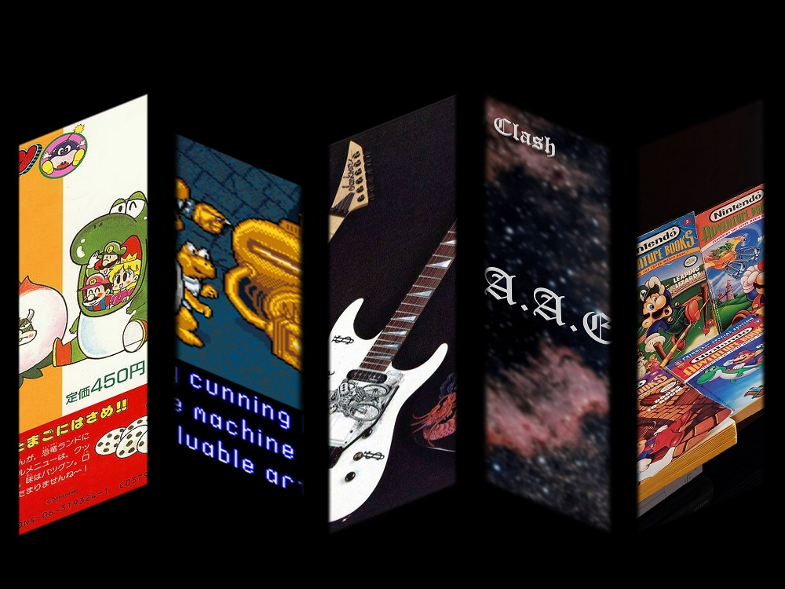

Hello and welcome to Mecha's 64 Castles. This is a personal blog, a fan-site for Mario and Nintendo, and a database on various subjects. Feel free to explore the tabs, or read the 'About Me' far below for some background!

What's new!
My mission... (Sounds ominous. It's just a blog thing really..)
Super Bowser 64 completed. Extra update on Psyche Out!
New and refreshed images on most articles, rewrites. See: Articles tab.
Updated Nintendo Adventure Book overview here, Super Paper Mario article here, Super Mario 64 article here.
In progress project(s) July 2026:
- Global refresh of articles, site redesigns here or there (better html). Check around!
- General site fixes, images, formatting, errors, updates to Charvel/Jackson pages as new models show
Completed projects list: here
!This is a fansite/ personal blog/ database for zero profit! All assets used belong to their respective owners unless noted! This site is hand built from scratch in Web 1.0 style. (Obviously at that!) No pre-made assets or web building tools are used in ANY section. I am also the webmaster and sole contributor at the moment, so forgive small errors. If something is outright broken, please contact me.